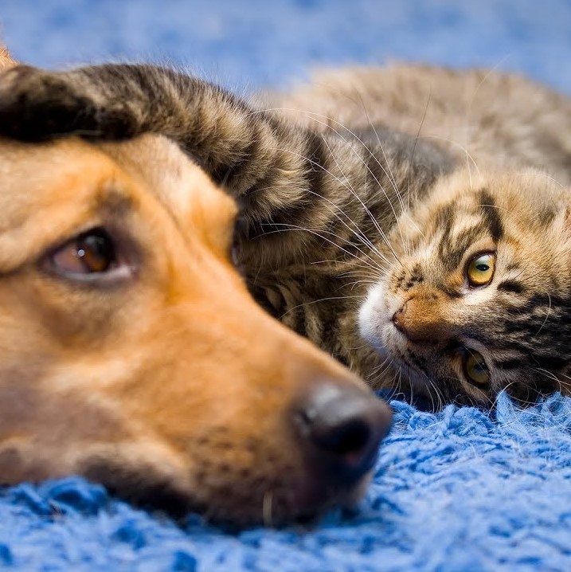
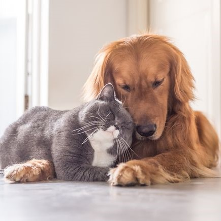

Adopt
Home
Find a Dog
Find a Cat
Volunteer
Name:
Email:
Address:
Contact no:
Age:
Occupation:
What are the other people you live with:
Parents
Spouse
Friends
While you are away will there be someone at home to take care of the pet:
Yes
No
Do you currently have any pets at home:
Yes
No
Have you discussed the idea of bringing the new pet with your family:
Yes
No
Do you or anyone at home have an allergy to animal hair:
Yes
No
If you get married and your spouse is not willing to keep the cat , what would you be doing in that case:
We will contact you shortly

